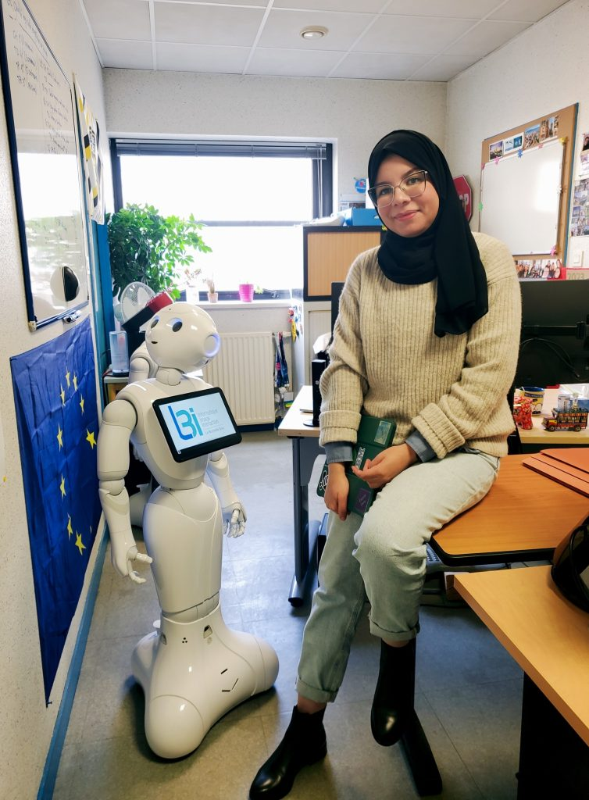
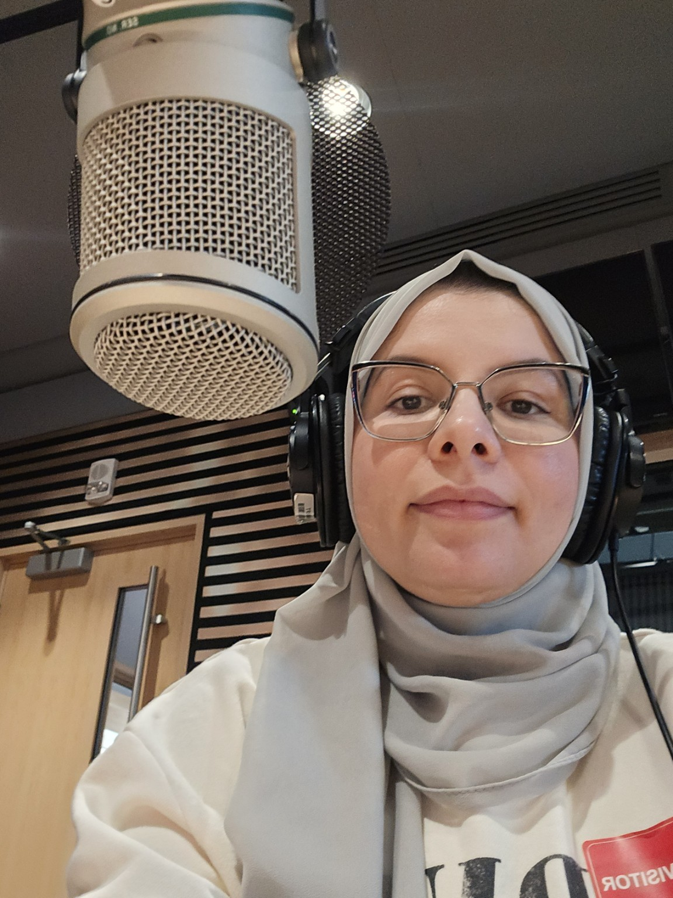
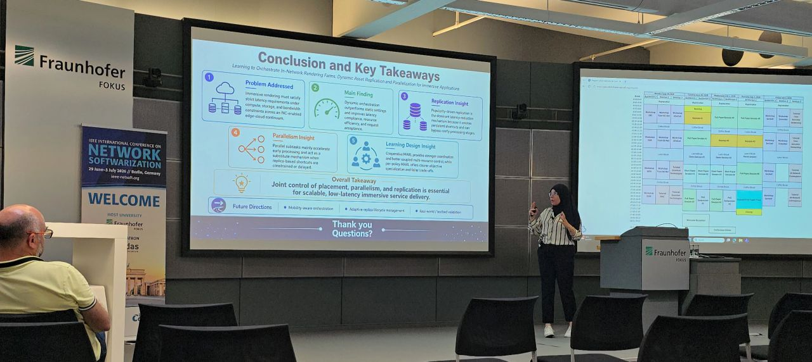
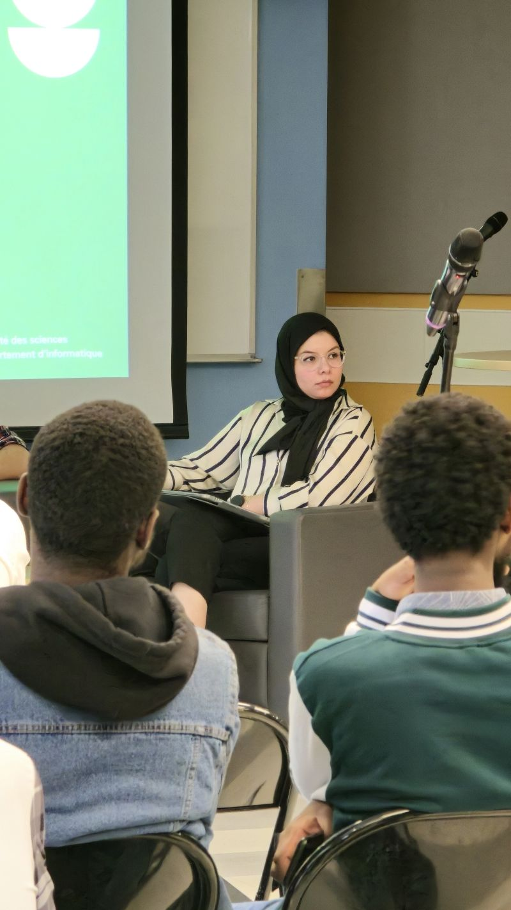

Joint 3C orchestration
Coordinating communication, computing, and caching for latency-sensitive immersive services.
- MINLP
- PSO-Greedy
- Resource allocation
Researcher · Systems thinker · Educator
I am Manel Gherari, a computer science researcher connecting networks, distributed intelligence, and resource optimization to build responsive cloud–edge systems.

Research perspective
The most consequential systems problems live between disciplines—where infrastructure meets intelligence, and mathematical rigor meets real-world constraints.
Research focus
How can distributed infrastructure make the right resource decision, at the right place, in real time?
Coordinating communication, computing, and caching for latency-sensitive immersive services.
Moving selected computation into programmable infrastructure for adaptive service delivery.
DRL and multi-agent strategies for placement, replication, and migration stability at scale.

From model to system
From formulation and simulation to conference dialogue, I build and communicate systems with practical constraints in view.
Technical ecosystem
A multidisciplinary toolkit for moving from mathematical models to reproducible experiments.
MILP · MINLP · Multi-objective models · Mathematical programming · Heuristics
PPO · APPO · IMPALA · Deep reinforcement learning · Multi-agent learning
Cloud–edge · In-network computing · SLURM · Apptainer · GPU pipelines
Simulation · Experimental evaluation · Reproducibility · IEEE writing · Peer review
Selected publications
Recognition & media
Research also matters through the people it reaches, the conversations it creates, and the paths it makes visible.

A portrait of my research journey and commitment to equitable participation of women in science.
Watch the portrait ↗
A public conversation about the metaverse, virtual reality, and the infrastructure behind immersive services.
Open the feature ↗
Recognition
Celebrating women researchers and the breadth of scientific work at UQAM.
Teaching & mentorship
Approximately five years of university-level teaching across computer science, supported by practical exercises, active learning, and close student guidance.

My teaching practice
Students learn technical ideas best when theory is made visible, testable, and connected to a problem they can solve.
I combine progressive explanations, demonstrations, guided exercises, case studies, collaborative work, and increasingly independent practice. My experience spans undergraduate and graduate classrooms, large-cohort assessment, and project supervision.
Designed and delivered lectures, tutorials, demonstrations, practical exercises, assignments, and assessments at undergraduate and graduate levels.
Taught human–computer interaction and IT management through usability workshops, interface prototyping, IT governance, databases, decision support, and introductory SPSS.
Assessed assignments and examinations for INF1070, INF5130, and INF3271, applying calibrated rubrics and coordinating timely feedback for cohorts exceeding 100 students.

Academic engagement · UQAM
I facilitated a career-orientation conversation on cloud computing, helping students connect academic pathways with roles, technologies, and opportunities in the field.
Academic journey
Two doctoral journeys across Algeria, France, and Canada shape how I research, teach, and collaborate.
Network computing at UQAM and La Rochelle Université. Thesis submitted.
Teaching across programming, data science, HCI, and information systems; supervision of six Master’s projects.
Cooperative information systems, following an M.Sc. in Software Engineering ranked first in the cohort.